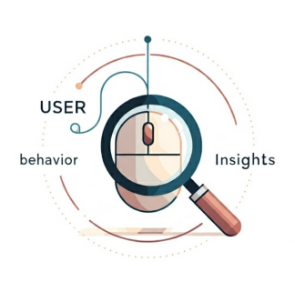

User Behavior Insights
Welcome to User Behavior Insights!

User Behavior Insights, or UBI, is a data standard along with a collection of tools and search engine plugins created to help search engineers gain and utilize an improved understanding of users' actions.
For questions or help getting started, reach out to help@ubisearch.dev or join us in the #ubi channel of the Relevance Slack workspace.
What UBI Powers
Are you or your organization using UBI? Let us know! We'd love to hear about it and tell your success story here.
- OpenSearch Search Relevance Workbench implicit judgements and query set creation is powered by UBI data.
UBI Conference Presentations
Learn more about UBI through conference presentations. If you have talked about UBI let us know so we can link your talk here, too.
- UBI at OpenSearchCon NA 2024 - Watch the presentation
- UBI at OpenSearchCon EU 2024 - Watch the presentation
- UBI at Haystack Conference 2024 - Your Search Engine Needs a Memory! (presentation and slides)
- UBI at MICES 2024 - Watch the presentation and see the slides
- UBI at Haystack EU 2024 - Leveraging User Behavior Insights to Enhance Search Relevance (presentation and slides)
There are a number of talks related to the topic of search quality and building tools that are fueled by UBI data as well.
- Breaking Search for Fun and Profit at Berlin Buzzwords 2025 - Watch the presentation
- Streamlining Search Quality: Search Relevance Workbench at Berlin Buzzwords 2025 - Watch the presentation
UBI Blogs
- A/B Testing with Team Draft Interleaving
- Elasticsearch plugin for UBI: Analyze user behavior from search queries
- Using UBI in Elasticsearch: Creating an app with UBI and search-ui
- Elasticsearch plugin for UBI: Analyze user data in Kibana
- Training LTR models in Elasticsearch with judgement lists based on user behavior data
Help Getting Started
For questions or help getting started, reach out to help@ubisearch.dev or join us in the #user-behavior-insights channel of the Relevance Slack workspace and we will be glad to help!
There are two demos that you can play with that demonstrate UBI in action:
- https://github.com/Eomm/opensearch-vibe - A simple example
- https://github.com/o19s/chorus-opensearch-edition - A reference implementation of ecommerce.
Purpose and Goals
Many Search teams struggle with understanding "Why is my user doing this". They have great understanding of an incoming query and the results returned, but no ability to connect that information with an indicator of success, such as a click through event or add to cart event.
There are many tools out there for tracking web events, e.g. Google Analytics, but each is a bit different, and each tends to focus on the general case rather than the specific needs of search teams.
The User Behavior Insights standard attempts to provide a search focused standard that can operate across many platforms. We currently have plugins for OpenSearch, Elasticsearch and Solr, but we hope that many other search platforms adopt UBI - get in touch if you'd like to help.
Once you have this tracking data, you can use it to:
- Develop a deeper understanding of what your users are doing.
- Power your offline evaluation platform.
- Tune search parameters automatically.
- Balance between different approaches to search (e.g. lexical and/or semantic).
- Deploy Team Draft Interleaving style A/B tests that drop test times to days from months.
Reference Implementation
A full reference implementation, showing UBI tracking search events on an e-commerce website, using OpenSearch is available at chorus-opensearch-edition. Check out the Quick Start for details on getting up and running with an example environment.
Sponsored & Led By
| Person | Affiliation | Contact |
|---|---|---|
| Eric Pugh | OpenSource Connections | epugh@opensourceconnections.com |
| Jeff Zemerick | Mountain Fog | jeff.zemerick@mtnfog.com |
| Stavros Macrakis | Amazon OpenSearch | macrakis@amazon.com |
| Charlie Hull | The Search Juggler | charlie@thesearchjuggler.com |